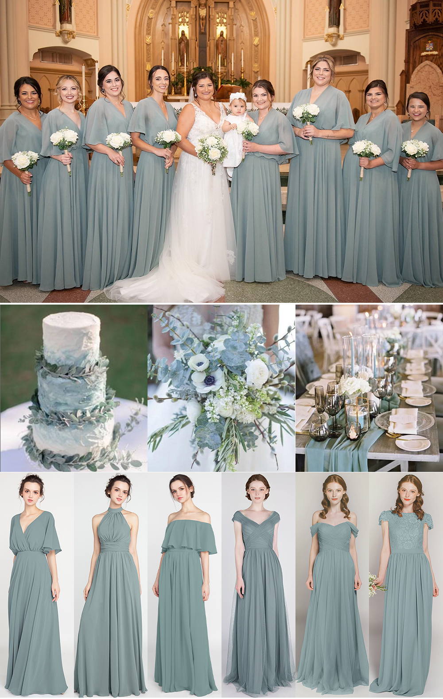
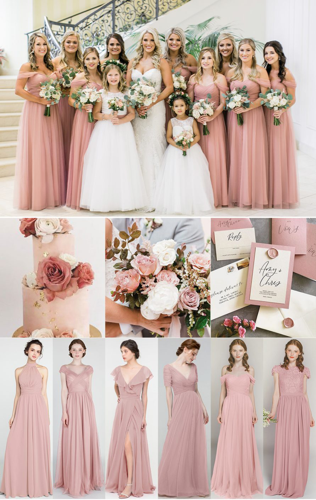

10 ЛЮБИМИ ЦВЯТА ЗА ПРИКАЗНА СВАТБА И СИМВОЛИКАТА НА ЦВЕТОВЕТЕ
Сватбата е най-красивият, щастлив и запомнящ се момент в живота на всеки!
Толкова емоции, толкова нежност и романтика. При организацията на всяка
сватба едно от най-важните решения, от което ще зависи визията на
празника, е именно цветовата палитра. Има толкова много тенденции – ярко,
пастелено, семпло, ексцентрично, дръзко, романтично, изборът е безкраен.
Понякога това може да е много трудна задача, но това, което ние можем да
ви посъветваме, е да не се ръководите от тенденциите, а това кое на вас ви
харесва. Кое ще подчертае същността ви, кое ще подхожда на стила на
сватбата, кое ще е вашето.
Като представители на сватбена агенция ние наистина знаем много за
цветовете. Всеки нюанс има своята символика, влияние върху настроението и
усещанията. Подготвили сме ви няколко приказно красиви цветови комбинации
– всички с вкус и елеганс биха могли да придадат вълнуващ изглед на
сватбата ви. От украсата, през букета, тортата, аксесоарите, облеклото на
шаферките, папионките на шаферите до дрескода, ако планирате да има такъв.
Представете си всеки детайл, изпълнен с вкус и стил.
1. НЕБЕСНО СИНЬО
Този цвят е символика на най-дълбокия, най-нематериалния и най-студен цвят, в който погледът сякаш потъва и се губи в безкрайността. Този нюанс на синьото е символ на блясъка на душата, олицетворение на небосвода, мечтите, вярата, търпението, истината и красотата. Може да комбинирате светло синият цвят с бяло, пастелно синьо и съвсем леки нотки на лилаво.
2. СЛЪНЧЕВА ЕСЕН
Ако виждате в себе си и половинката ви топли души, есенен уют и тиха радост – то вероятно това са вашите цветове. Приказна комбинация от топлина и уют. Комбинацията на оранжево, светло кафяво, тъмно розово и бордо може да превърне сватбата ви в есенна приказка. Разбира се, не на последно място, тази цветова палитра е много подходяща за ранни есенни сватби. Оранжевият цвят олицетворява енергия, здраве, индивидуалност, самоувереност и обновление. Един прекрасен начин да започнете приключението “семейство”.
3. РОЗОВА ЕСЕН
Цветова комбинация, подходяща за по-късните есенни сватби. Тук отново виждаме топлината на оранжевият цвят, но този пък с много по-мек и ненаситен нюанс, комбиниран с нежни нюанси на тъмен пепел от рози. Това вероятно никой мъж няма да го разбере, но момичета – знаете за какво говоря.
4. МЕНТОВА СВЕЖЕСТ
Този нюанс на синьо-зеленото в последните години придоби голяма популярност, но за това си има причина и напълно заслужено това е един от любимите цветове на свежите летни и пролетни сватби. Ако сте хора със свободна и фриволна душа, не обичате ограниченията и не ви допада показността, то смело прегърнете този цвят. Комбинира се чудесно с бяло, светло бежово и не ярки нюанси на зеленото. И един бонус – това е един от най-подходящите цветове за плажни сватби.

5. БОРДО
Ако сте дръзки, със самочувствие и самоуверени като личности и двойка – няма по-подходящ цвят за вас от вечната класика бордо. Тъмният винен цвят на пръв поглед изглежда малко мрачен за сватба, но си го представете комбинирано с цялата емоция от празника, сексапилна булка и добро настроение. Сватбата може да придобие съвсем друг вид при избора на този цвят като я изпълни със свежест и дързост. Също е подходящ цвят за есенни сватби, но този цвят подхожда на всеки сезон. Комбинира се страхотно с бялата булчинска рокля, аксесоари от тъмно и светло бордо, тъмно бежово, а защо не и малки детайли в черно. Нюансите на червеното също така са символ на огъня и живота. Честно казано цветът не отива на всеки характер, но ако вие намирате себе си в него, може да е най-правилният избор. А не на последно място – бордото е супер подходящ цвят за сватби през студените месеци.
6. СВЕТЛО ЗЕЛЕНО
Знаете ли, че в някои страни има поверие, че ако дадеш сутрин на някого нещо зелено, то ще му донесе щастие. В този случай говорим на пастеления светъл тон на зеленото, който е много подходящ за пролетни и коктейлни сватби. Ако харесвате джаз, саксофон и нежни вокали, е много възможно този цвят да пасне чудесно на вас и половинката ви. Зеленият цвят е символ на мъдрост, а настроението, което той носи със себе си, е щастие, спокойствие и мир. Комбинацията му с бяло, детайли в тъмно зелено и светло бежово е най-подходяща.
7. ПЕПЕЛ ОТ РОЗИ
Един много нежен нюанс между розовото и червеното, който подхожда на дамите, защото цветът е много женствен. Разбира се, това не означава, че няма да отива на сватбата ви заради годеникът ви или гостите от силният пол. Напротив, с този цвят в декорацията ще се откроят женската нежност и мъжката сила. Булка в бяло, младоженец в черен смокинг и букет от топли розови цветове – красота. За този цвят много добре подхожда нежен грим в топли цветове, леко розово червило и съвсем лек контур на лицето. Цветя в косата също биха допринесли за нежната визия на сватбата. Цветовата палитра е подходяща както за външни сватби, така и за сватби на открито.

8. ЦВЯТ ПУДРА
Розовото винаги е било приемано като момичешки цвят. В настроението на една приказна сватба този цвят може да ви покаже от най-честата ви и невинна страна. Отново е изключително нежен цвят, символ на новия живот – разцъфването на пролетните цветове. Най-подходящият сезон за този цвят е именно пролетта. Комбиниран със светли нюанси на зеленото, може сватбата ви да се превърне в сватба като от приказките – с принцът и принцесата. Пък и всички знаем, че мъжете изглеждат страхотно с розови ризи, папионки или вратовръзки.
9. СИНЬО-ЛИЛАВА ПРИКАЗКА
Комбинацията на тези цветове създава много нежен и студен цвят на лилавото. Изключително красив цвят, подхождащ най-вече на светли хора. Ако сте със светли очи, светла коса и светъл тен, замислете се дали това не е най-подходящият цвят за вашата сватба. Идеален избор е и за пролетни, и за летни сватби. Знаете ли, че лилавият цвят е символ на тайната. Никой не знае защо, вероятно е тайна. Има наистина много романтика в тази идея и в този нюанс.
10. ЕМЕРАЛД
Шампионът днес, с който ще завършим тази цветова колекция, е именно най-предпочитаният цвят за горска сватба – тъмното зелено или както също се нарича – емералд. Цветът се комбинира чудесно с булчинското бяло, с позитивното настроение и подсказва за започване на нова стъпка от живота ви. Чист тъмно зелен цвят, който свързваме с планините, дърветата, естественият цвят на природата. Подходящ за всички сезони, а комбинирането му е най-красиво с дърво и като цяло дървени елементи от украсата и аксесоарите. Ако сте творчески личности, този цвят може да ви разгърне.
Нашият екип с удоволствие ще запази най-важните ви спомени по най-красивия и истински начин. Свържете се с нас!